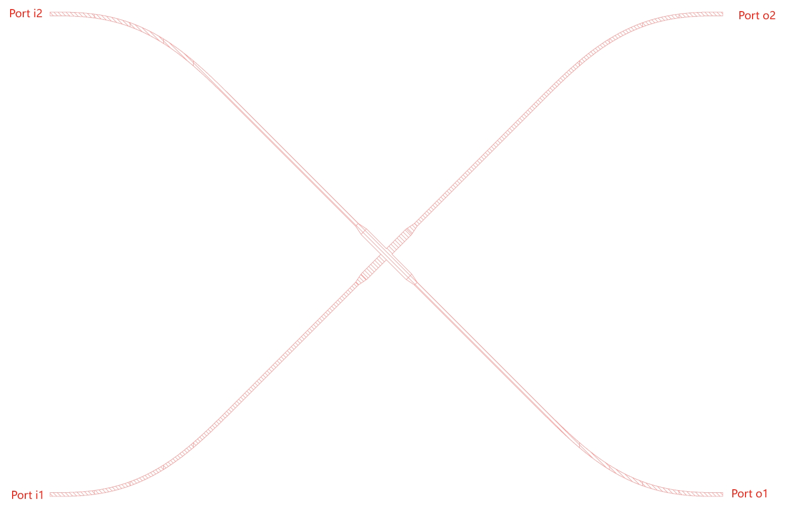
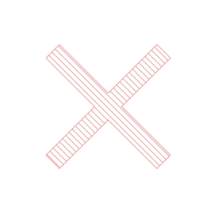
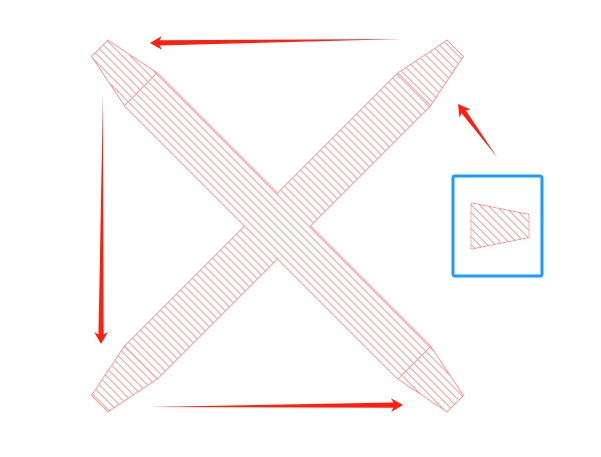
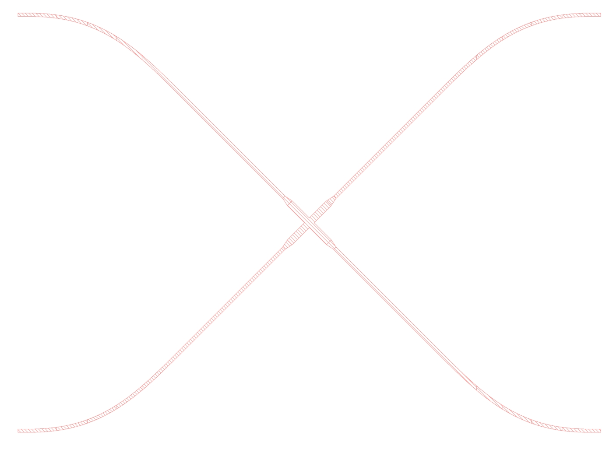

第一个例子: 波导交叉
此例子生成如图所示的波导交叉, 其包含四个 port.
{kind=link}

整体而言, 构建 Device 需要根据器件构建参数, 声明类的属性.
下列代码中 __init__ 函数即完成此功能, 其中 super().__init__(name) 完成父类的初始化,
其余 self.xxx = xxx 格式的语句即为类属性的声明.
此外, 类定义需要重载 self.draw() 方法, 此方法给出绘制器件的过程.
import numpy as np
from Devices import Device
import gdstk
class Cross45(Device):
def __init__(self, name):
super().__init__(name)
self.w1 = 4.0 # ring-bus gap [um]
self.w2 = 2.0 # ring waveguide width [um]
self.L1 = 33.3
self.L2 = 5.0
self.dy = 250
def draw(self):
rect = gdstk.rectangle((-self.L1 / 2, -self.w1 / 2), (self.L1 / 2, self.w1 / 2), layer=1)
core = gdstk.boolean(rect.copy(), rect.rotate(np.pi / 2), 'or', layer=1)
self.add_polygon_obj(core[0].rotate(np.pi/4))
self.new_path([self.L1 / 2, 0], self.w1, layers=1)
self.add_segment(self.L2, width=self.w2)
self.curPath.rotate(np.pi / 4)
self.end_current_path(add_copy=True)
self.curPath.rotate(np.pi / 2)
self.end_current_path(add_copy=True)
self.curPath.rotate(np.pi / 2)
self.end_current_path(add_copy=True)
self.curPath.rotate(np.pi / 2)
self.end_current_path()
curDy = (self.L1/2 + self.L2) / np.sqrt(2)
self.new_path([curDy, curDy], self.w2, layers=1)
self.curAngle = np.pi/4
self.add_segment((75-curDy)*np.sqrt(2))
self.add_spline([100, 50, 0, 0])
self.end_current_path(add_copy=True)
self.curPath.mirror((0, 1))
self.end_current_path(add_copy=True)
self.curPath.mirror((1, 0))
self.end_current_path(add_copy=True)
self.curPath.mirror((0, 1))
self.end_current_path()
self.add_port('i1', [-175, -125], np.pi, self.w2)
self.add_port('i2', [-175, +125], np.pi, self.w2)
self.add_port('o1', [+175, -125], 0, self.w2)
self.add_port('o2', [+175, +125], 0, self.w2)
接下来, 我们详细针对 draw() 方法以 “代码段 - 说明” 的形式给出说明.
rect = gdstk.rectangle((-self.L1 / 2, -self.w1 / 2), (self.L1 / 2, self.w1 / 2), layer=1)
core = gdstk.boolean(rect.copy(), rect.rotate(np.pi / 2), 'or', layer=1)
self.add_polygon_obj(core[0].rotate(np.pi/4))
上述三行代码用于形成十字结构, 如图所示.
{kind=link}

第一行调用 gdstk.rectangle 方法, 生成矩形对象,
第一个参数为矩形左下角坐标, 第二个参数为矩形右上角坐标.
第二行是将第一行所得到矩形, 与其旋转 90 度后的结果进行 “或” 操作, 放置于层 1.
需要注意, rect 为对象的引用, 因此对其操作将影响所有 rect 对像, 因此布尔操作是对其副本 rect.copy() 和
变换后的结果 rect.rotate(np.pi / 2) 进行运算.
第三行将第二行得到的十字, 进行 45 度转动后, 通过 add_polygon_obj() 方法, 加入 Device 类的多边形列表.
需要注意, gdstk.boolean 返回的是 gdstk.Polygon 类的列表, 但由于此结构极为简单, 列表中仅有一个元素,
因此只需将索引为 0 的对象加入多边形列表即可.
self.new_path([self.L1 / 2, 0], self.w1, layers=1)
self.add_segment(self.L2, width=self.w2)
self.curPath.rotate(np.pi / 4)
self.end_current_path(add_copy=True)
self.curPath.rotate(np.pi / 2)
self.end_current_path(add_copy=True)
self.curPath.rotate(np.pi / 2)
self.end_current_path(add_copy=True)
self.curPath.rotate(np.pi / 2)
self.end_current_path()
上述代码用于 cross 器件到波导端口的 taper 连接, 效果如图.
{kind=link}

下面详细阐述其实现方法. 首先调用 new_path 方法初始化一条路径, 第一个参数为路径起始坐标, 第二个参数为路径宽度,
第三个参数为放置结构的层. 此方法会为 self.curPath 初始化一个 gdstk.RobustPath 对象.
随后, 调用 add_segment 方法添加一个直线段, 长度为 self.L2, 末端宽度 self.w2.
第二个参数为可选参数, 若为空则路径宽度不变.
此时, 所得路径如图中蓝框内结构所示, 显然并非我们想要.
因此, 我们通过 self.curPath.rotate 直接操纵 gdstk.RobustPath 对象, 通过 gdstk 提供的旋转方法,
将其转动45度, 与波导交叉末端接在一起.
成型的基本结构, 若想能够成为器件的一部分, 同多边形一样, 需要加入类的路径列表, 这件事情通过 end_current_path 实现.
这里, 我们加入的路径为 self.curPath 的一个副本, 即 self.curPath.copy(), 为了做到这一点,
只需在调用方法 end_current_path 将参数 add_copy 给成 True 即可.
波导交叉具有四个端口, 因此我们需要加入四个 taper.
仅需反复调用 self.curPath.rotate(np.pi / 2) 将其旋转, 以及 self.end_current_path(add_copy=True) 便可逐步加入四段 taper.
由于我们始终令 add_copy=True, 因此后续对 self.curPath 不会影响已经加入路径列表的路径对象.
curDy = (self.L1/2 + self.L2) / np.sqrt(2)
self.new_path([curDy, curDy], self.w2, layers=1)
self.curAngle = np.pi/4
self.add_segment((75-curDy)*np.sqrt(2))
self.add_spline([100, 50, 0, 0])
self.end_current_path(add_copy=True)
self.curPath.mirror((0, 1))
self.end_current_path(add_copy=True)
self.curPath.mirror((1, 0))
self.end_current_path(add_copy=True)
self.curPath.mirror((0, 1))
self.end_current_path()
上述代码用于后续到 port 的波导连接, 已经和最终效果一致, 效果如图. 其思路同前类似, 先画出一条波导, 随后通过三次旋转结合镜像操作, 得到最终结构.
{kind=link}

其中有几点需要说明: 1. self.curAngle 记录了当前 self.curPath 末端角度, 可以通过改变此属性, 直接调节下一条绘制路径的起始斜率;
2. self.add_spine() 方法用于连续曲率曲线的生成, 它仅包含一个参数, 为一个包含四个实数的列表.
下面详细说明 add_spine() 方法. 该方法接收参数为 [dx, dy, Af, Cf], 它自动获取起始点的角度 self.curAngle 和曲率 self.curCurvature,
相对于当前起始点, 生成一条 [dx, dy] 的相对坐标增量曲线, 曲线末端的角度 Af 和曲率 Cf 为用户给定.
此曲线上, 切线方向和曲率满足连续变化.
能够提供较低的波导弯曲损耗.
self.add_port('i1', [-175, -125], np.pi, self.w2)
self.add_port('i2', [-175, +125], np.pi, self.w2)
self.add_port('o1', [+175, -125], 0, self.w2)
self.add_port('o2', [+175, +125], 0, self.w2)
代码的最后一部分用于声明器件的端口, 对于 Chip 构建具有重要作用.
端口声明通过 add_port 方法完成, 其第一个参数为用户自定义名称, 第二个参数为端口坐标,
第三个参数为端口外法线角度, 第四个参数为端口处波导宽度.